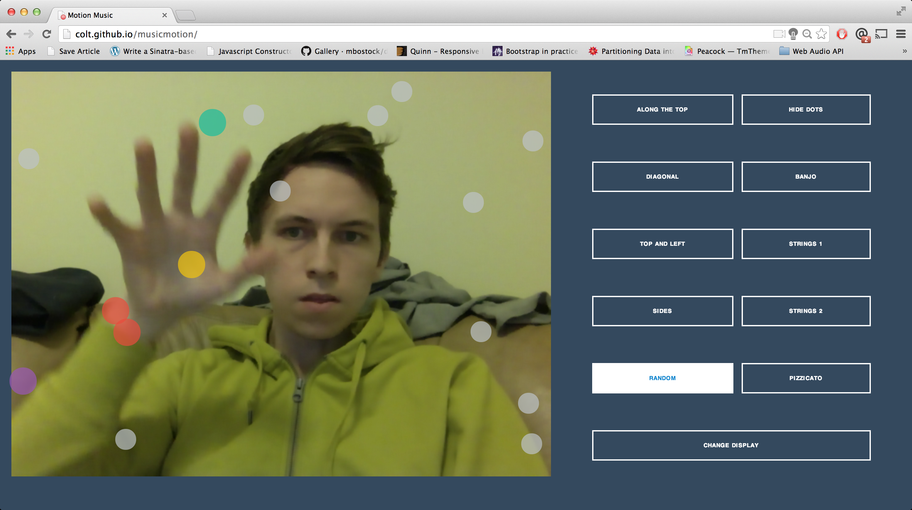
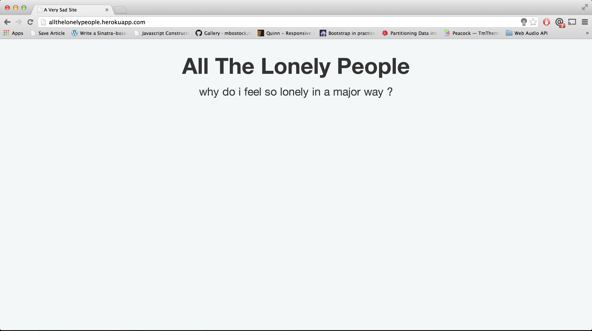
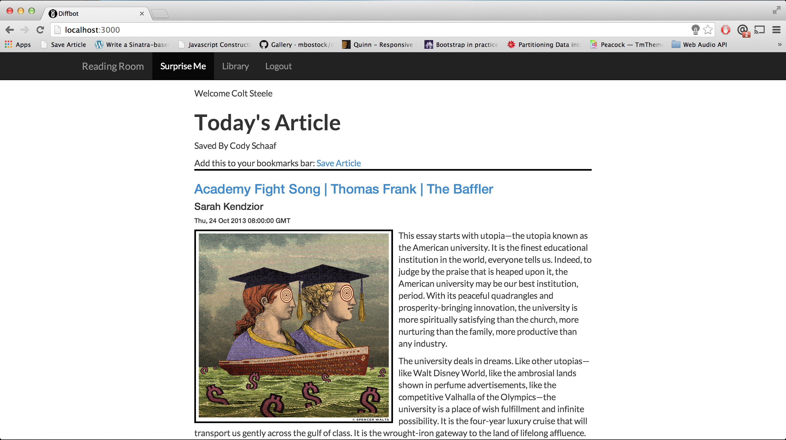

Colt Steele
Web Developer, Audio Engineer
Some things I've worked on:
Motion Music - an instrument that you play by moving

All The Lonely People - Listen to loneliness via Twitter

Tiny Talk - A tiny social network for familes

Reading Room - saves texts and images from articles
